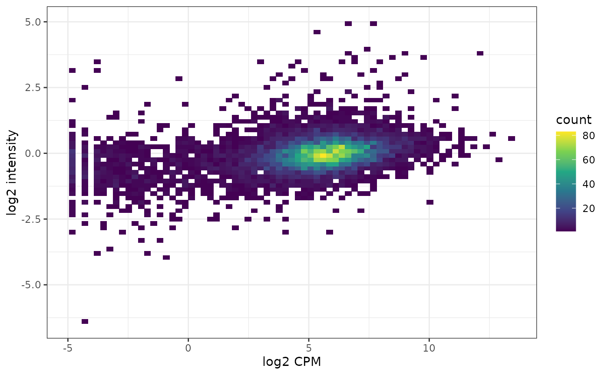
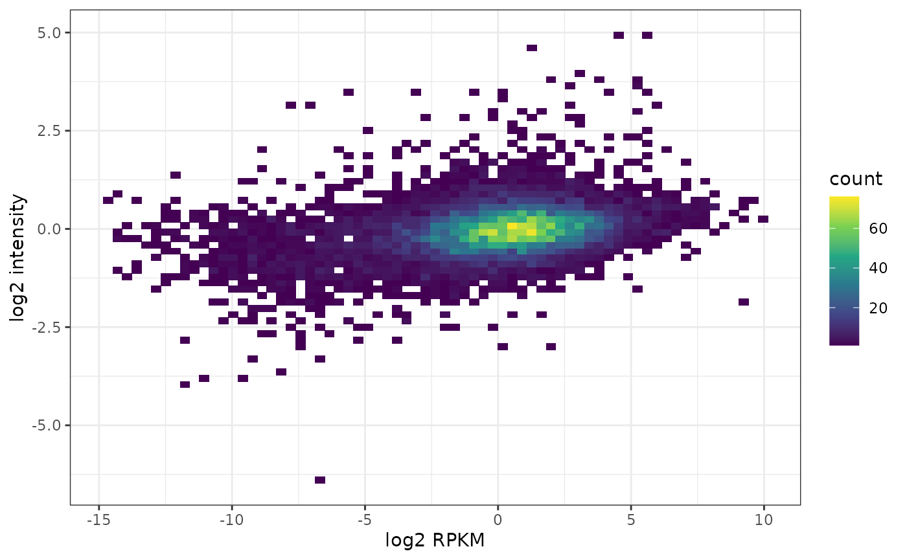

TranscriptomeProteome.RmdCCLE transcriptome and proteome data for HCT116
Get CCLE transcriptome data for HCT116:
atlasRes <- ExpressionAtlas::searchAtlasExperiments(
properties = "Cancer Cell Line Encyclopedia",
species = "human" )## Searching for Expression Atlas experiments matching your query ...## Query successful.## Found 1 experiments matching your query.
atlasRes## DataFrame with 1 row and 4 columns
## Accession Species Type Title
## <character> <character> <character> <character>
## 1 E-MTAB-2770 Homo sapiens RNA-seq of coding RNA RNA-seq of 934 human..
ccle.trans <- ExpressionAtlas::getAtlasData(atlasRes$Accession)## Downloading Expression Atlas experiment summary from:
## ftp://ftp.ebi.ac.uk/pub/databases/microarray/data/atlas/experiments/E-MTAB-2770/E-MTAB-2770-atlasExperimentSummary.Rdata## Successfully downloaded experiment summary object for E-MTAB-2770
ccle.trans <- ccle.trans$`E-MTAB-2770`$rnaseq
ccle.trans <- ccle.trans[,grep("HCT 116", ccle.trans$cell_line)]
ccle.trans## class: RangedSummarizedExperiment
## dim: 65217 1
## metadata(4): pipeline filtering mapping quantification
## assays(1): counts
## rownames(65217): ENSG00000000003 ENSG00000000005 ... ENSG00000281921
## ENSG00000281922
## rowData names(0):
## colnames(1): run_HCT_116.2
## colData names(4): AtlasAssayGroup organism cell_line diseaseGet the CCLE proteome data for HCT116:
eh <- ExperimentHub::ExperimentHub()## snapshotDate(): 2021-05-18## 'getOption("repos")' replaces Bioconductor standard repositories, see
## '?repositories' for details
##
## replacement repositories:
## CRAN: https://packagemanager.rstudio.com/all/__linux__/focal/latest## Bioconductor version 3.13 (BiocManager 1.30.16), R 4.1.0 (2021-05-18)## Installing package(s) 'depmap'## Old packages: 'gargle', 'googledrive', 'RPostgres', 'testthat', 'vroom',
## 'Matrix', 'mgcv'## snapshotDate(): 2021-05-18## see ?depmap and browseVignettes('depmap') for documentation## loading from cache
ccle.prot <- as.data.frame(ccle.prot)
ccle.prot <- BioPlex::ccleProteome2SummarizedExperiment(ccle.prot)
ccle.prot## class: SummarizedExperiment
## dim: 12755 1
## metadata(0):
## assays(1): expr
## rownames(12755): P55011 P35453 ... Q99735 Q9P003
## rowData names(2): SYMBOL ENTREZID
## colnames(1): HCT116
## colData names(0):Connect to AnnotationHub and obtain OrgDb package for human:
ah <- AnnotationHub::AnnotationHub()
ahdb <- AnnotationHub::query(ah, c("orgDb", "Homo sapiens"))
orgdb <- ahdb[[length(ahdb)]]Map to ENSEMBL for comparison with CCLE transcriptome data for HCT116:
rnames <- AnnotationDbi::mapIds(orgdb,
keytype = "UNIPROT",
column = "ENSEMBL",
keys = rownames(ccle.prot))## 'select()' returned 1:many mapping between keys and columnsSubset to the ENSEMBL IDs that both datasets have in common
This should be rather RPKM, provided gene length from EDASeq:
assay(ccle.trans, "cpm") <- edgeR::cpm(assay(ccle.trans), log = TRUE)A look at general correlation between transcriptome and proteome:
cor.test(assay(ccle.trans, "cpm")[isect,],
assay(ccle.prot)[ind,],
use = "complete.obs")##
## Pearson's product-moment correlation
##
## data: assay(ccle.trans, "cpm")[isect, ] and assay(ccle.prot)[ind, ]
## t = 32.224, df = 7848, p-value < 2.2e-16
## alternative hypothesis: true correlation is not equal to 0
## 95 percent confidence interval:
## 0.3221509 0.3612272
## sample estimates:
## cor
## 0.3418368
df <- data.frame(trans = assay(ccle.trans, "cpm")[isect,],
prot = assay(ccle.prot)[ind,])
ggplot(df, aes(x = trans, y = prot) ) +
geom_bin2d(bins = 70) +
scale_fill_continuous(type = "viridis") +
xlab("log2 CPM") +
ylab("log2 intensity") +
theme_bw()## Warning: Removed 2690 rows containing non-finite values (stat_bin2d).
Let’s check whether this looks very different when accounting for gene length. We therefore obtain gene length for the hg38 genome assembly (used for CCLE).
ahdb <- AnnotationHub::query(ah, c("TxDb", "Homo sapiens"))
txdb <- ahdb[["AH92591"]]
gs <- GenomicFeatures::genes(txdb)
gs## GRanges object with 27113 ranges and 1 metadata column:
## seqnames ranges strand | gene_id
## <Rle> <IRanges> <Rle> | <character>
## 1 chr19 58345178-58362751 - | 1
## 10 chr8 18391282-18401218 + | 10
## 100 chr20 44619522-44652233 - | 100
## 1000 chr18 27932879-28177946 - | 1000
## 10000 chr1 243488233-243851079 - | 10000
## ... ... ... ... . ...
## 9991 chr9 112217716-112333664 - | 9991
## 9992 chr21 34364006-34371381 + | 9992
## 9993 chr22 19036282-19122454 - | 9993
## 9994 chr6 89829894-89874436 + | 9994
## 9997 chr22 50523568-50526461 - | 9997
## -------
## seqinfo: 595 sequences (1 circular) from hg38 genome## 1 10 100 1000 10000 100009613
## 17574 9937 32712 245068 362847 3000This requires to map from Entrez IDs present for the gene length data to ENSEMBL IDs present in the transcriptomic data.
eids <- AnnotationDbi::mapIds(orgdb,
column = "ENTREZID",
keytype = "ENSEMBL",
keys = rownames(ccle.trans))## 'select()' returned 1:many mapping between keys and columns
rowData(ccle.trans)$length <- len[eids]We can now compute RPKM given the obtained gene lengths as input.
assay(ccle.trans, "rpkm") <- edgeR::rpkm(assay(ccle.trans),
gene.length = rowData(ccle.trans)$length,
log = TRUE)
cor.test(assay(ccle.trans, "rpkm")[isect,],
assay(ccle.prot)[ind,],
use = "complete.obs")##
## Pearson's product-moment correlation
##
## data: assay(ccle.trans, "rpkm")[isect, ] and assay(ccle.prot)[ind, ]
## t = 29.79, df = 7814, p-value < 2.2e-16
## alternative hypothesis: true correlation is not equal to 0
## 95 percent confidence interval:
## 0.2993008 0.3391210
## sample estimates:
## cor
## 0.3193519
df <- data.frame(trans = assay(ccle.trans, "rpkm")[isect,],
prot = assay(ccle.prot)[ind,])
ggplot(df, aes(x = trans, y = prot) ) +
geom_bin2d(bins = 70) +
scale_fill_continuous(type = "viridis") +
xlab("log2 RPKM") +
ylab("log2 intensity") +
theme_bw()## Warning: Removed 2724 rows containing non-finite values (stat_bin2d). –>
DE analysis HEK293 vs. HCT116 (transcriptomic and proteomic level)
Pull the HEK293 data:
gse.293t <- BioPlex::getGSE122425()## Using cached version from 2021-07-12 05:34:43Pull the HCT116 data:
klijn <- ExpressionAtlas::getAtlasData("E-MTAB-2706")## Downloading Expression Atlas experiment summary from:
## ftp://ftp.ebi.ac.uk/pub/databases/microarray/data/atlas/experiments/E-MTAB-2706/E-MTAB-2706-atlasExperimentSummary.Rdata## Successfully downloaded experiment summary object for E-MTAB-2706
klijn <- klijn$`E-MTAB-2706`$rnaseq
klijn## class: RangedSummarizedExperiment
## dim: 65217 622
## metadata(4): pipeline filtering mapping quantification
## assays(1): counts
## rownames(65217): ENSG00000000003 ENSG00000000005 ... ENSG00000281921
## ENSG00000281922
## rowData names(0):
## colnames(622): ERR413347 ERR413348 ... ERR414020 ERR415514
## colData names(12): AtlasAssayGroup organism ... media freeze_mediaCombine the both HCT116 samples:
ind2 <- grep("HCT 116", klijn$cell_line)
emat <- cbind(assay(ccle.trans), assay(klijn)[,ind2])
colnames(emat) <- c("ccle", "klijn")
head(emat)## ccle klijn
## ENSG00000000003 2471 1876
## ENSG00000000005 0 0
## ENSG00000000419 4082 3731
## ENSG00000000457 1160 676
## ENSG00000000460 1785 1206
## ENSG00000000938 0 0Combine with the HEK293 wildtype samples:
isect <- intersect(rownames(emat), rownames(gse.293t))
emat <- cbind(emat[isect,], assay(gse.293t)[isect, 1:3])
colnames(emat) <- paste0(rep(c("HCT", "HEK"), c(2,3)), c(1:2, 1:3)) Compute logCPMs to bring samples from different cell lines and experiments on the same scale using the limma-trend approach:
dge <- edgeR::DGEList(counts = emat)
dge$group <- rep(c("HCT", "HEK"), c(2,3))
design <- model.matrix(~ dge$group)
keep <- edgeR::filterByExpr(dge, design)
dge <- dge[keep,,keep.lib.sizes = FALSE]
dim(dge)## [1] 19484 5
dge <- edgeR::calcNormFactors(dge)
logCPM <- edgeR::cpm(dge, log = TRUE, prior.count = 3)
fit <- limma::lmFit(logCPM, design)
fit <- limma::eBayes(fit, trend = TRUE)
limma::topTable(fit, coef = ncol(design))## logFC AveExpr t P.Value adj.P.Val
## ENSG00000198786 -15.770778 2.377802 -101.69268 8.130301e-11 7.127842e-07
## ENSG00000176788 9.924371 4.197113 93.46125 1.338881e-10 7.127842e-07
## ENSG00000100219 11.372134 2.892771 89.94957 1.678907e-10 7.127842e-07
## ENSG00000227063 11.604079 3.031938 87.85518 1.929682e-10 7.127842e-07
## ENSG00000134871 9.388458 4.587640 87.50795 1.975368e-10 7.127842e-07
## ENSG00000261409 12.847018 3.975241 85.63962 2.244035e-10 7.127842e-07
## ENSG00000138829 9.497422 4.565920 83.74690 2.560814e-10 7.127842e-07
## ENSG00000133124 12.785690 3.928053 81.60748 2.983876e-10 7.267230e-07
## ENSG00000159217 8.133320 4.816707 78.01356 3.893508e-10 7.395928e-07
## ENSG00000041982 8.161008 4.436087 76.99581 4.207589e-10 7.395928e-07
## B
## ENSG00000198786 13.21201
## ENSG00000176788 13.05849
## ENSG00000100219 12.98240
## ENSG00000227063 12.93350
## ENSG00000134871 12.92513
## ENSG00000261409 12.87866
## ENSG00000138829 12.82908
## ENSG00000133124 12.76978
## ENSG00000159217 12.66162
## ENSG00000041982 12.62889Now let’s pull the BioPlex3 proteome data:
bp.prot <- BioPlex::getBioplexProteome()## Using cached version from 2021-07-12 05:56:37
rowData(bp.prot)## DataFrame with 9604 rows and 5 columns
## ENTREZID SYMBOL nr.peptides log2ratio adj.pvalue
## <character> <character> <integer> <numeric> <numeric>
## P0CG40 100131390 SP9 1 -2.819071 6.66209e-08
## Q8IXZ3-4 221833 SP8 3 -3.419888 6.94973e-07
## P55011 6558 SLC12A2 4 0.612380 4.85602e-06
## O60341 23028 KDM1A 7 -0.319695 5.08667e-04
## O14654 8471 IRS4 4 -5.951096 1.45902e-06
## ... ... ... ... ... ...
## Q9H6X4 80194 TMEM134 2 -0.379342 7.67195e-05
## Q9BS91 55032 SLC35A5 1 -2.237634 8.75523e-05
## Q9UKJ5 26511 CHIC2 1 -0.614932 1.78756e-03
## Q9H3S5 93183 PIGM 1 -1.011397 8.91589e-06
## Q8WYQ3 400916 CHCHD10 1 0.743852 1.17163e-03Compare differential expression results on transcriptomic and proteomic level based on gene symbols as those are readily available:
isect <- intersect(rowData(bp.prot)$SYMBOL,
rowData(gse.293t)[rownames(logCPM), "SYMBOL"])
length(isect)## [1] 8980
ind.trans <- match(isect, rowData(gse.293t)[rownames(logCPM), "SYMBOL"])
ind.prot <- match(isect, rowData(bp.prot)$SYMBOL)We need to switch here the sign of the fold change because the transcriptome is HEK-vs-HCT, the proteome is HCT-vs-HEK:
cor.test(-1 * tt[ind.trans, "logFC"],
rowData(bp.prot)[ind.prot, "log2ratio"])##
## Pearson's product-moment correlation
##
## data: -1 * tt[ind.trans, "logFC"] and rowData(bp.prot)[ind.prot, "log2ratio"]
## t = 71.548, df = 8978, p-value < 2.2e-16
## alternative hypothesis: true correlation is not equal to 0
## 95 percent confidence interval:
## 0.5892634 0.6156127
## sample estimates:
## cor
## 0.6026023
df <- data.frame(trans = -1 * tt[ind.trans, "logFC"],
prot = rowData(bp.prot)[ind.prot, "log2ratio"])
ggplot(df, aes(x = trans, y = prot) ) +
geom_bin2d(bins = 70) +
scale_fill_continuous(type = "viridis") +
xlab("log2FC (transcriptome)") +
ylab("log2FC (proteome)") +
theme_bw()